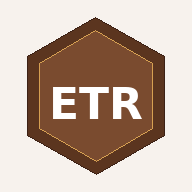

Onde estou?
funcionalUse a posição do telefone para situar a observação no território. Nesta primeira integração o Atlas registra coordenadas e precisão e permite levar a posição diretamente ao mapa.
Localização ainda não solicitada.

Este modo organiza o Atlas para estudantes. Ele reduz a complexidade técnica e conduz a observação por evidências, fontes, escalas, incertezas e perguntas. Algumas funções já estão conectadas ao sistema e outras permanecem identificadas como módulos em integração.
Use a posição do telefone para situar a observação no território. Nesta primeira integração o Atlas registra coordenadas e precisão e permite levar a posição diretamente ao mapa.
Atividades curtas para aprender observando, comparando e formulando hipóteses. As três primeiras missões ficam incorporadas como estrutura pedagógica inicial.
Compare áreas com diferentes níveis de informação. Identifique onde há evidência, onde há ausência de registro e por que um espaço transparente não deve ser interpretado como valor zero.
Compare 250, 500 e 1000 km². Observe quais padrões permanecem, quais desaparecem e quais surgem quando a unidade de análise muda.
Escolha uma camada, identifique fonte, data, escala, tipo de evidência e limitações. Depois formule uma pergunta que o dado ainda não consegue responder.
Escolha um hexágono de 250 km², compare maturidade cartográfica e potencial geocientífico documentado, identifique o que falta e formule uma pergunta investigável.
Abre a Caderneta Geológica Digital para estações de campo, GPS, observação, litologia, medidas estruturais, amostras codificadas, fotografias, interpretação e revisão.
Caderno de Campo Geocientífico Digital integrado. Organiza estações, GPS, litologia, observação, medidas, amostras, GeoFoto, croquis, revisão e exportações locais sem incorporar automaticamente registros de campo à base científica do Atlas.
Compare o lugar atual com reconstruções paleogeográficas. Uma paleoposição é resultado de modelo e não uma trajetória física observada.
Separe o que foi observado do que foi interpretado. Registre precisão GPS, respeite acesso, áreas protegidas, patrimônio e regras de coleta.
Antes de abrir uma explicação, descreva o padrão: os dados estão concentrados ou dispersos? Há continuidade? Existem vazios? O padrão muda com a escala?
Esta edição não apresenta os totais operacionais do catálogo geral do Atlas. O foco é a cadeia fonte, snapshot, evidência, regra, modelo, relação espacial, hex_id e resultado.
A unidade científica é o estado atribuído a um modelo mineral em um hexágono e escala determinados. Os onze modelos não são somados em um índice único.
A ajuda desta edição contém apenas documentação necessária para interpretar, reproduzir e auditar PAG ETR.
Esta versão pode ser instalada como aplicativo quando aberta por HTTPS em um navegador compatível. A instalação mantém o mesmo Atlas e o mesmo conjunto científico da versão publicada.
A mesma PWA está preparada para ser empacotada como APK Android usando Trusted Web Activity. O APK deve ser gerado depois que a URL pública estiver ativa porque a validação exige associação entre o domínio publicado e a assinatura do aplicativo.
O pacote GitHub inclui um guia TWA com Bubblewrap. A associação Android deve ser validada por Digital Asset Links antes de considerar o APK como TWA verificada.
PAG ETR é um atlas geocientífico educativo, científico e digital de Mato Grosso do Sul. Sua missão central é apoiar a alfabetização geocientífica e a leitura crítica e multiescalar do território. A aplicação integra cartografia, evidências, observações de campo, bibliografia e índices para que o usuário não apenas consulte mapas, mas compreenda como o conhecimento é produzido, quais são seus limites e onde permanecem lacunas que podem orientar novas perguntas, atividades de ensino e investigação.
setembro de 2026 As camadas podem ser capturadas em datas diferentes. O corte registrará as versões, arquivos e datas efetivamente utilizados para permitir reprodução e atualização posterior.
O catálogo está organizado em 14 grupos. Eles abrangem base geográfica, geologia e estratigrafia, tectônica e estruturas, geomorfologia, solos e regolito, hidrologia e hidrogeologia, geoquímica, geofísica e geotermia, recursos minerais e mineração, geodiversidade e geoconservação, espeleologia e carste, sismicidade, geodinâmica e riscos geológicos, clima e eventos extremos, amostras e Campo UFMS, conhecimento geocientífico e análises, além de malhas e índices.
Ita está documentado em Kaiowá com o sentido de pedra. Arandu aparece associado a conhecimento e sabedoria em fontes Guarani e Kaiowá. ITA ARANDU é uma construção conceitual do projeto e não é apresentada como expressão tradicional fixa. O uso do nome procura reconhecer povos originários, valorizar a presença indígena na história territorial de Mato Grosso do Sul e afirmar que a produção de conhecimento sobre o espaço não começa nem termina nos bancos de dados técnicos. A adoção institucional definitiva dependerá de validação linguística e cultural adequada.
Fontes oficiais, fontes científicas, produtos derivados de ITA ARANDU e observações de campo permanecem identificados como naturezas diferentes. Uma camada administrativa não é tratada como evidência geológica e uma observação de aluno não se torna automaticamente dado validado.
A dimensão educativa é parte da arquitetura metodológica do PAG ETR. O objetivo não é transformar o Atlas em um sistema de respostas prontas, mas apoiar a capacidade de observar, localizar, registrar, comparar, argumentar com evidências, reconhecer incertezas e formular novas perguntas geocientíficas. A expressão alfabetização geocientífica é utilizada de forma operacional, em diálogo com os Earth Science Literacy Principles, que apresentam a compreensão da Terra como dependente de observações repetíveis, ideias testáveis e relações entre processos do sistema terrestre REF-124.
O Modo Aprender prioriza ações do estudante. Perguntar, analisar informação, comparar representações, construir explicações e revisar interpretações são mais importantes que memorizar o valor exibido por uma camada. Essa orientação é compatível com o Framework do National Research Council, que integra práticas científicas, conceitos transversais e ideias disciplinares e enfatiza que o estudante deve participar ativamente da construção de explicações REF-126.
O desenho de Campo e Missões adota como referência a tradição de educação geológica que trata a saída de campo como parte integrada do currículo. Orion propõe preparação, trabalho no local e síntese posterior, enquanto Orion e Hofstein demonstram que a aprendizagem em campo é influenciada pelo grau de novidade cognitiva, geográfica e psicológica do ambiente REF-119 REF-120. Por isso o aplicativo deve preparar o estudante antes da atividade, orientar a observação no local e conservar registros para síntese posterior.
Mogk e Goodwin sintetizam a pesquisa sobre pensamento e aprendizagem no campo geocientífico e reforçam que a atividade envolve coordenação entre observação, representação, interpretação, navegação e raciocínio espacial REF-121. No PAG ETR, a ficha de campo separa deliberadamente observação de interpretação.
A geologia é aprendida em um território concreto. A educação baseada no lugar, discutida por Semken e Freeman e sistematizada por Semken, Ward, Moosavi e Chinn, utiliza ambientes locais e regionais e seus significados naturais e culturais como contexto da ciência REF-122 REF-123. Essa abordagem sustenta a decisão de utilizar Mato Grosso do Sul como laboratório territorial do Atlas e ajuda a integrar geologia, paisagem, memória territorial e conhecimentos locais sem converter conhecimentos culturalmente situados em dados descontextualizados.
O raciocínio espacial é uma competência central da aprendizagem em geociências. Liben e Titus discutem a importância de relações espaciais, orientação, representações e transformação entre dimensões para a educação geocientífica REF-125. No Atlas, a comparação entre 250, 500 e 1000 km² é também uma atividade educativa. O estudante é convidado a observar quais padrões persistem, mudam ou desaparecem quando a unidade espacial de análise se modifica.
As Missões evitam, sempre que possível, uma lógica de resposta única revelada imediatamente. King, Kennett e Devon descrevem atividades de educação geocientífica apoiadas em investigação, modelos, experimentos mentais e questionamento profundo REF-127. O PAG ETR adapta esse princípio ao ambiente digital por meio de perguntas como o que você observa?, qual evidência sustenta essa interpretação?, o que muda com a escala? e o que ainda precisaria ser investigado?.
O telefone celular funciona como interface entre mapa e lugar. Locke e colaboradores descrevem uma experiência de EarthCaching voltada à formação docente em geociências que articula aprendizagem formal e informal e destaca preparação, segurança, navegação, observação, estimativa, previsão e significado cultural dos locais REF-128. No Atlas, GPS, câmera e armazenamento local apoiam registro e contextualização. A precisão de sensores de consumo deve permanecer explícita e o dispositivo não substitui instrumentos profissionais quando a atividade exige medição especializada.
Com base nesses referenciais, o projeto adota uma síntese operacional própria. Ela não é apresentada como método validado externamente do PAG ETR, mas como arquitetura educativa a ser testada, avaliada e refinada com estudantes e professores.
ITA ARANDU Campo adota uma estrutura simplificada inspirada no modelo Spots e Tags do StraboSpot. Nesta versão de desenvolvimento cada ficha corresponde a um Spot pontual georreferenciado. Cada Spot recebe identificador próprio, pode indicar um Spot pai e pode receber Tags conceituais para agrupar observações sem depender apenas da posição geográfica. A estrutura interna já preserva essas relações para futura expansão a linhas, polígonos e relações hierárquicas mais complexas.
O núcleo estadual parte do mapa geológico do Serviço Geológico do Brasil em escala 1:1.000.000, publicado em 2006 e materializado como snapshot local. A geometria original e os atributos de unidade, sigla, hierarquia, litotipos, idades e descrição permanecem preservados.
Camadas derivadas · A síntese litológica agrupa o campo LITOTIPOS em classes amplas apenas para leitura didática. A camada de idades colore as unidades segundo sua posição temporal sem alterar os campos cronológicos da fonte. Os contatos são calculados a partir das fronteiras compartilhadas entre unidades distintas. Essas três visualizações são produtos derivados do Atlas e não novas cartografias oficiais.
Camadas conectadas · Afloramentos, petrografia, geocronologia, ocorrências fossilíferas e cobertura de projetos consultam serviços oficiais do Geoportal SGB. Enquanto não forem congeladas no corte de setembro, dependem de rede e aparecem identificadas como conectadas.
O bloco distingue três naturezas de informação. A geomorfologia oficial de referência vem do BDiA do IBGE em escala 1:250.000 e será incorporada somente quando o recorte de Mato Grosso do Sul, os atributos e a legenda forem preservados no snapshot. O mapa estadual de solos já possui 1.851 polígonos locais e 230 classes. A V21 deixa de usar uma cor genérica e consulta a simbologia oficial da camada Solos-MS 1:250.000 do PIN MS pelo campo classe. A resposta é armazenada no navegador para reutilização, sem substituir a geometria local.
TOPODATA · MDE, declividade, orientação, curvaturas, formas de terreno e relevo sombreado permanecem preparados para captura. O INPE documentou em 2026 acesso contemporâneo por COG e WMS, mas ITA ARANDU só os marcará como conectados depois de validar o endpoint operacional, a cobertura de MS e as respectivas legendas no ambiente de publicação.
O Atlas trata amostragem geoquímica, levantamentos geofísicos e observações geotérmicas como evidências diferentes. Os pontos da Geoquímica Integrada do SGB são observações de amostras e permanecem classificados pelo meio amostral. Água, concentrado de bateia, sedimento de corrente, sedimento marinho, rocha, solo, vegetação, mineral ou minério e outros meios podem ser visualizados separadamente sem converter os registros em superfícies contínuas.
Geofísica · Os polígonos AERO indicam cobertura de projetos e metadados de aquisição. Não são mapas de anomalia. Magnetometria, gradiente magnético, K, eTh, eU e composições ternárias permanecem como produtos de captura porque cada mosaico deve preservar projeto, resolução, altura de voo, espaçamento e processamento. As estações gravimétricas e magnetotelúricas são observações pontuais e permanecem separadas dos produtos raster derivados.
O Atlas separa deliberadamente a evidência geológica da situação administrativa minerária. O snapshot local do Serviço Geológico do Brasil reúne 279 ocorrências minerais em Mato Grosso do Sul. A representação principal utiliza o campo CLASSES_UTILITARIAS e as cores publicadas na simbologia oficial do Geoportal SGB. As vistas de importância e status econômico reutilizam exatamente os mesmos pontos e apenas representam os campos IMPORTANCIA e STATUS_ECONOMICO.
ANM e SIGMINE · A ANM publica diariamente poligonais de processos ativos e inativos, arrendamentos, áreas de bloqueio, proteção de fonte e reservas garimpeiras. O portal de geoinformação lançado em 2026 também reúne áreas de servidão e outras bases administrativas. Nesta versão essas entradas permanecem como captura preparada até que o recorte de Mato Grosso do Sul seja congelado com data, arquivo original e hash. Barragens de mineração permanecem em uma camada separada do SIGBM por terem finalidade de segurança e fiscalização.
O Atlas distingue geodiversidade, inventário de geossítios e hipóteses de interesse geológico. O Mapa de Geodiversidade de Mato Grosso do Sul do SGB é uma cartografia geoambiental e não uma classificação de valor patrimonial. Os 54 itens do Decreto Estadual nº 12.897/2009 constituem uma lista oficial estadual. Os registros GEOSSIT preservam a categoria e as avaliações publicadas no sistema. O inventário conciliado do projeto é uma camada documental de síntese e não substitui avaliação científica individual de geossítio.
As cavidades naturais subterrâneas provêm do CANIE/CECAV e mantêm o nível de validação disponível no snapshot local. O próprio CANIE adverte que o cadastro reúne apenas cavidades conhecidas e cadastradas, não todo o universo de cavernas existentes. Nesta versão, 334 registros locais estão em Nível 1 e 7 em Nível 2.
A camada de unidades com litotipos carbonáticos é derivada exclusivamente da cartografia geológica SGB e seleciona descrições explícitas de calcário, dolomito, mármore ou brecha carbonática. Ela indica contexto litológico e não equivale a mapa de suscetibilidade cárstica. A vista hidrogeológica cárstica deriva das 24 unidades classificadas como Cárstica (K) no recorte hidrogeológico local.
O bloco climático separa infraestrutura de observação, séries meteorológicas, climatologia de referência, monitoramento hidrometeorológico e registros administrativos de desastres. Uma estação é uma localização de observação. As medições ao longo do tempo permanecem associadas à estação e não são transformadas em milhares de feições cartográficas independentes.
Dados observados · Precipitação, temperatura, umidade e vento são variáveis medidas. Dados horários de estações automáticas podem conter falhas de sensor ou comunicação e não devem ser confundidos com normais climatológicas. As Normais Climatológicas 1991–2020 permanecem em camada separada.
CEMADEN · Pluviômetros e estações hidrológicas são pontos de monitoramento. Os dados do CEMADEN são registrados em UTC. Uma estação de monitoramento não representa a extensão espacial de uma inundação ou de outro processo.
Alertas · Avisos meteorológicos são produtos operacionais dinâmicos e têm validade temporal. Podem ser consultados como apoio, mas não substituem o snapshot científico nem devem ser tratados como inventário histórico.
As grades de 250, 500 e 1000 km² existem para cálculo de indicadores e índices. Resultados de 500 km² não serão somas de índices de 250 km². Resultados de 1000 km² não serão agregações de índices menores. Cada escala parte das fontes originais e preserva área nominal, área efetiva dentro de MS e percentual de interseção.
A sequência metodológica será evidências originais, variáveis territoriais, indicadores dimensionais e índices compostos. Todo índice deverá registrar fórmula, normalização, fontes, versão, data de cálculo, tratamento de células periféricas e análise de sensibilidade quando aplicável.
O IPG é uma triagem territorial da evidência geocientífica documentada. Utiliza o inventário consolidado com 124 unidades, 42 complexos de contagem e nove temas geocientíficos. Dois registros com coordenadas generalizadas ficam fora da malha estadual recortada e são preservados no inventário, mas não recebem pontuação territorial nesta versão de desenvolvimento.
Diversidade temática · Tn corresponde à proporção de temas presentes entre nove temas. O equilíbrio de Simpson normalizado Sn reduz a dominância de um único tema. Dn = 0,60 Tn + 0,40 Sn.
Riqueza documental · Cada unidade possui peso documental qi. Dentro de cada complexo, qg = min(1,50, qmax + 0,20 × soma dos demais registros). A riqueza Q é a soma dos complexos e Qn = log10(Q + 1) / log10(Qmax + 1). Qmax é recalculado separadamente em cada escala.
Continuidade · Cn é o número de células vizinhas com evidência dividido por seis.
Classes · 0 a menos de 20 muito baixo · 20 a menos de 40 baixo · 40 a menos de 60 médio · 60 a menos de 75 alto · 75 a 100 muito alto. Cinza significa evidência espacial insuficiente nesta fase e não potencial geocientífico baixo.
Regra multiescalar · 250, 500 e 1000 km² são recalculados diretamente a partir das unidades originais. Nenhum resultado de 500 km² é soma de valores de 250 km² e nenhum resultado de 1000 km² é agregado de escalas menores.
Referências metodológicas no registro mestre · Simpson 1949 · Brilha 2016 · protocolo PAG ETR do IPG multiescalar.
O Atlas separa água superficial, unidades hidrogeológicas e observações de poços. A rede hidrográfica e as ottobacias descrevem organização da drenagem. As unidades hidrogeológicas descrevem o meio geológico que armazena ou transmite água subterrânea. SIAGAS representa pontos cadastrados e RIMAS representa estações dedicadas ao monitoramento. Uma área classificada como aquífero não garante vazão, qualidade ou profundidade em um ponto específico.
O recorte local do Atlas Hidrogeológico do Brasil conserva 391 polígonos com unidade aflorante, domínio granular, fraturado ou cárstico, espessura de intemperismo, grau de fraturamento e produtividade. O Mapa Hidrogeológico do Estado de Mato Grosso do Sul de 2024 é tratado como produto estadual oficial independente e será congelado a partir do pacote SIG publicado pelo SGB. A BHO6 da ANA será a referência futura para relações montante-jusante e ottocodificação.
Fichas locais registram coordenadas, precisão, litologia, mineralogia, estruturas, medidas, hidrogeologia, mineralização, geotecnia, amostras e fotografias. Observação e interpretação são campos independentes. A integração em uma base científica exige revisão.
O registro mestre de fontes é parte da metodologia. Cada referência recebe identificador, grupo, tipo, estado de uso e URL. O objetivo é que qualquer resultado possa ser rastreado até as fontes que o sustentam.
Catálogo, referências, arquivos, metadados, geometrias, legendas, licenças conhecidas e validações devem ser coerentes entre si. Pendências permanecem visíveis e não são convertidas em dado incorporado apenas para completar o menu.